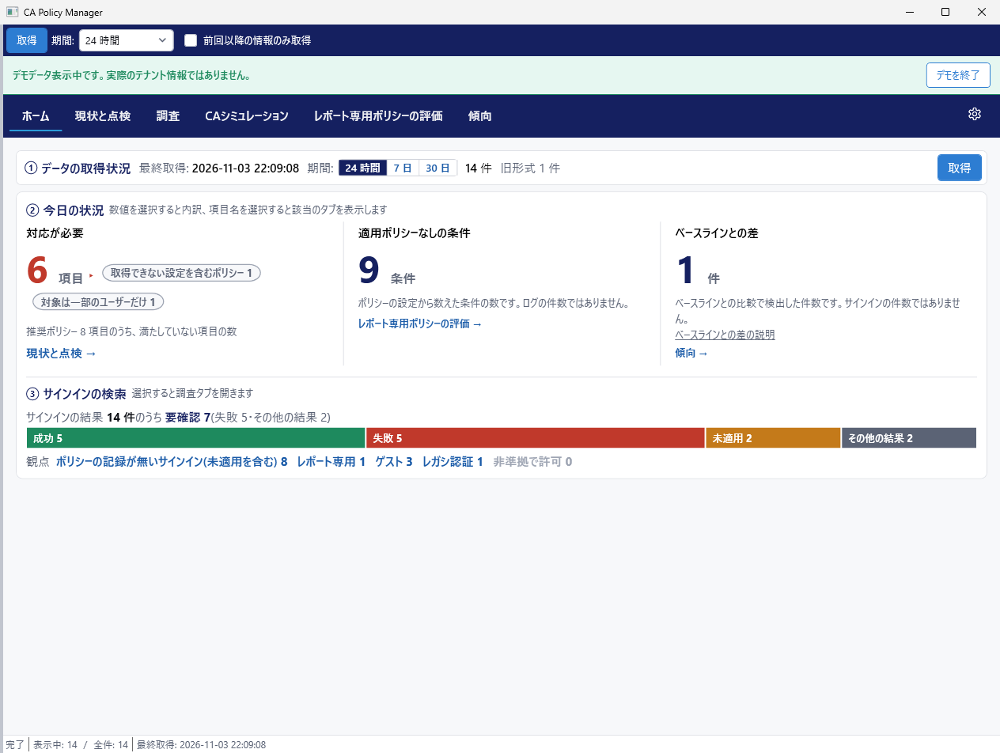
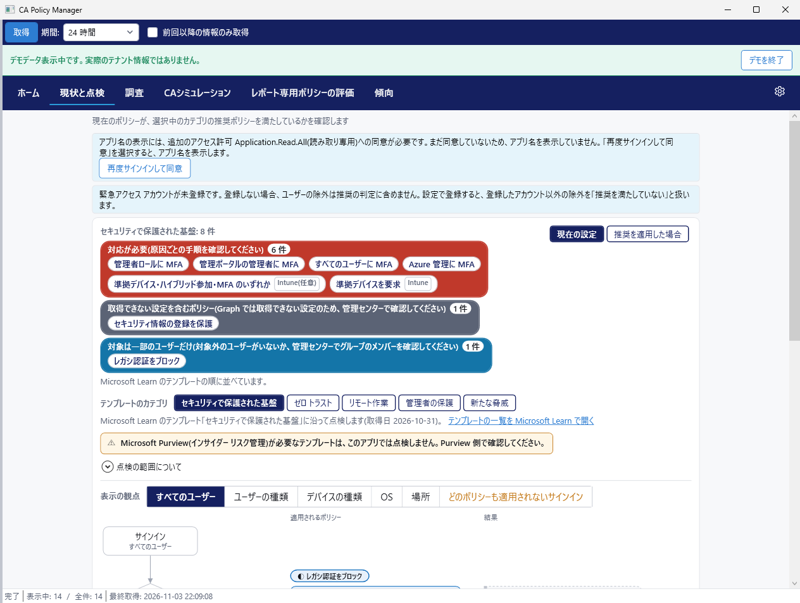
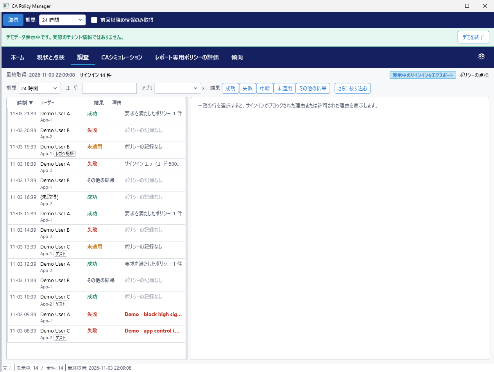
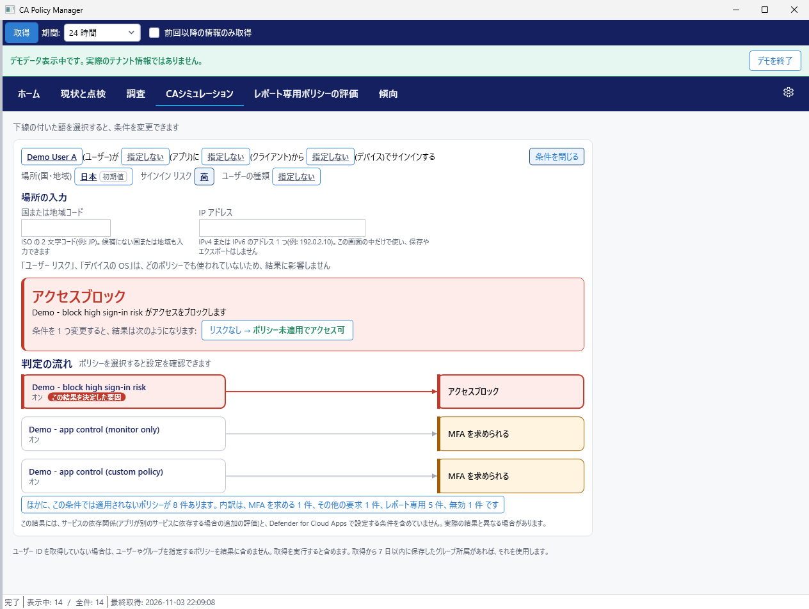
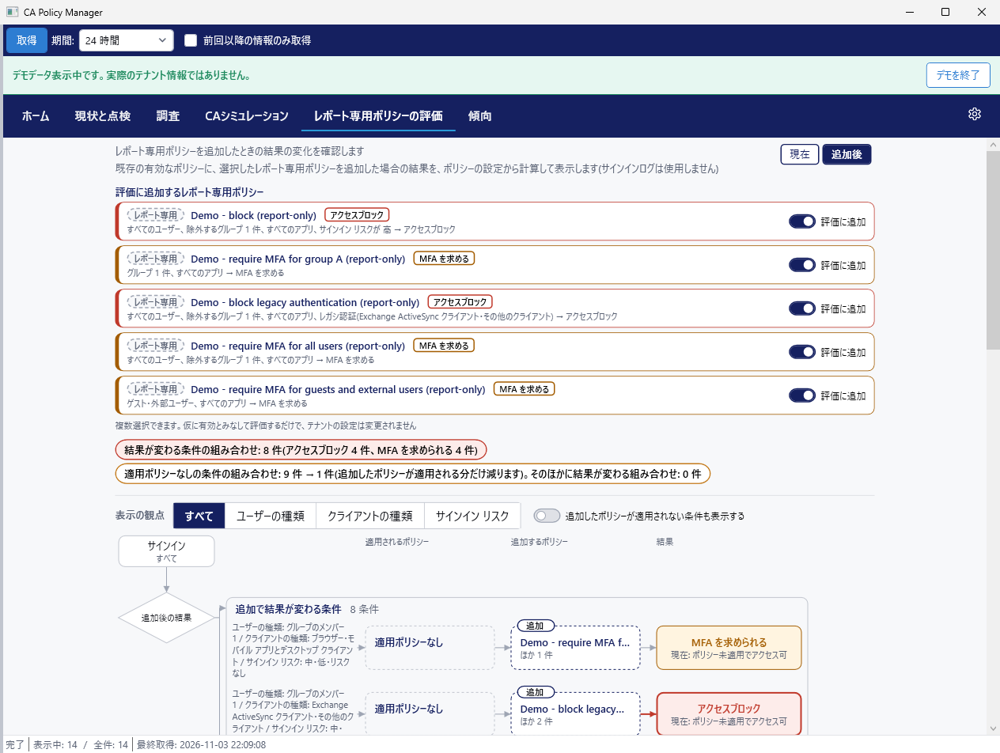
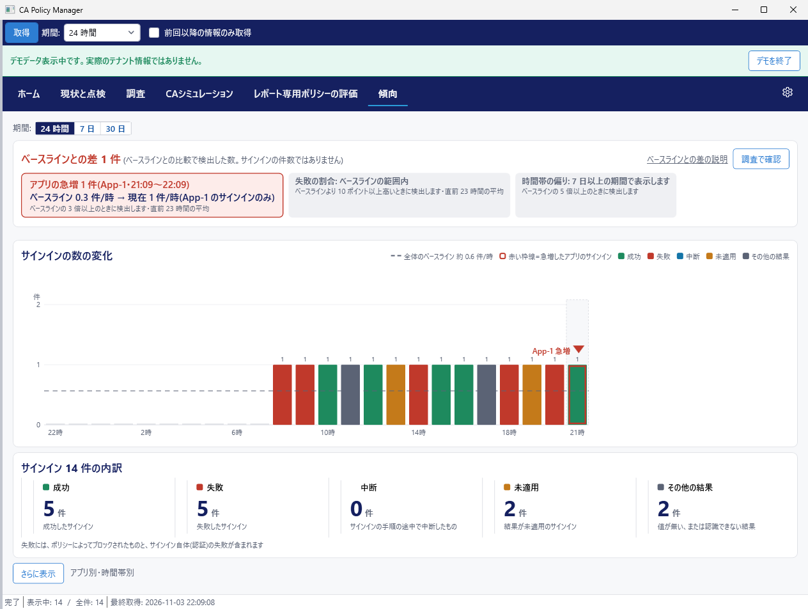
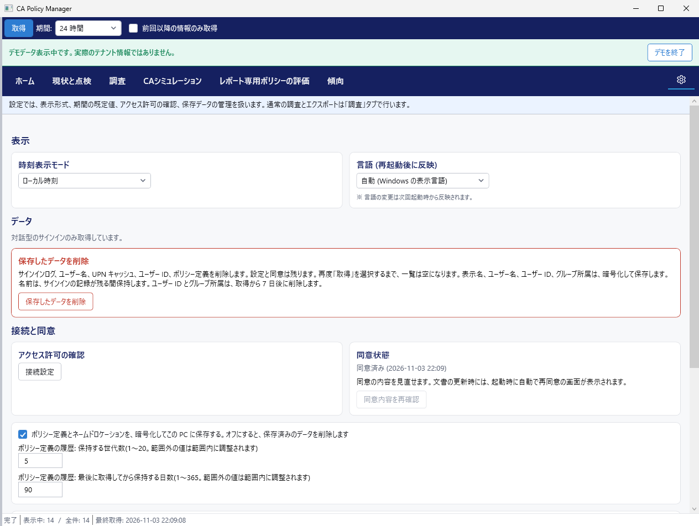

画像はすべてデモの合成データです
最初に確認する画面です。データの取得状況、今日の状況、サインインの検索が並びます。今日の状況の 3 つの数は次のとおりです。
サインインの検索には、結果ごとの件数と、ポリシーの記録が無いサインイン、ゲストなどの観点ごとの件数を表示します。選択すると調査を開きます。
適用ポリシーを記録していない旧形式の行があるときは、データの取得状況に「旧形式 N 件」と表示します。旧形式の行は、観点別の件数に含めません。

今のポリシーと推奨の差は、ここで確認します。カテゴリを選択すると、推奨ポリシーを満たしているかを点検します。「現在の設定」と「推奨を適用した場合」を切り替えられます。Microsoft Graph で取得できない設定を含むポリシーは、管理センターでの確認を案内します。

個別のサインインを調べるときは、この画面を使います。一覧を期間、ユーザー、アプリ、結果で絞り込み、行を選択すると、ブロックされた理由または許可された理由を表示します。結果の値が無いサインインは「結果の記録なし」、認識できない値のサインインは「その他の結果」と表示します。「ポリシーの点検」で、ポリシーの構成を確認できます。有償版では、表示中のサインインを CSV と HTML にエクスポートできます。
サインインの詳細には結論の文を表示します。主な区分は、ポリシーによるブロック、サインイン処理のエラーによる失敗(ポリシーの要求は満たした場合と、評価されたポリシーの記録がない場合)、ポリシーによるブロックではなくサインインの流れの途中での中断(同意の画面、パスワードの再設定や登録の画面、「サインインの状態を維持しますか」の確認など、ユーザーの操作が必要なもの)です。ポリシーによるブロックの記録がないまま失敗したサインインは、その旨を示します。許可されたサインインには、許可の理由を示します。適用されたポリシーの結果が「失敗」のサインインでは、「ブロックの原因を確認」を選択すると、ブロックしたポリシーを別のウィンドウに流れ図で表示します。結果が「失敗」のポリシーが無いサインイン(ポリシーの要求は満たしたもののエラーで失敗したサインイン、中断したサインインなど)には、このボタンも流れ図も表示されません。
「ポリシーの点検」で確認できる項目は次のとおりです。
「全ユーザーに多要素認証(MFA)を求めている」の点検では、グループやロールの除外(指定した緊急アクセス アカウントのものを除く)またはアプリの除外があるポリシーを「候補」と表示し、「問題は見つかっていません」とは示しません。緊急アクセス アカウントを指定していないときは、ユーザーの除外を緊急アクセスと見なします。緊急アクセス アカウントを指定したときは、指定外のユーザーの除外がある場合や、場所・プラットフォーム・デバイスのフィルター・リスク・クライアント アプリの種類で対象を絞っている場合も「候補」になります。全ユーザー・全アプリに MFA を求め、除外も絞り込みもない(緊急アクセス アカウントの除外は可)別のポリシーが 1 つでもあれば、ほかに候補のポリシーがあっても、結果は「問題は見つかっていません」のままです。「候補」の表示は、1.0.1.0 以降で使えます。「レガシ認証をブロックしている」の点検では、全ユーザー・全アプリを対象にしないブロックは、穴がない根拠に数えません。
有償版のエクスポートでは、監査レポートに 7 項目の件数、許可・拒否の理由の上位 3 件、ユーザー別・アプリ別・ポリシー別の上位 20 件の集計表(21 件目以降は合計の 1 行)が入ります。監査レポートの CSV には、これらに加えて、4 つの観点に該当するサインインが省略なしで入ります。各行には、日時・アプリ・ユーザー・IP アドレス・ユーザーの種類・結果・理由の 7 列が入ります。設定の「ユーザーの表示方法」が「匿名」のときは、ユーザーを匿名化した形で、IP アドレスを丸めた範囲で出力します。

実際のサインインを待たずに、結果を確認できます。ユーザー、アプリ、クライアント、デバイス、場所、リスクなどの条件を指定すると、結果(アクセスブロック、MFA を求められる、ポリシー未適用でアクセス可など)と判定の流れを表示します。ユーザーの種類として、組織内のユーザーと、ゲストと外部ユーザーの 6 種類も指定できます。入力した IP アドレスは画面の中だけで使い、保存もエクスポートもしません。この結果は Microsoft の公式の評価ではありません。

レポート専用ポリシーを有効にする前に、結果の変化を確認する画面です。既存の有効なポリシーに、選択したレポート専用ポリシーを追加した場合の結果を計算します。サインインログは使わず、ポリシーの設定から計算します。「現在」と「追加後」を切り替えられます。適用ポリシーなしの条件の組み合わせが、追加によって何件減るかも表示します。テナントの設定は変更しません。
この画面で分かるのは、レポート専用のポリシーを追加したときに、条件の組み合わせごとに結果がどう変わるかです。どのユーザーが影響を受けるかというユーザー単位の影響と、有効なポリシーを編集した場合の影響は示しません。

期間を選択すると、サインインの数の変化と内訳(成功、失敗、中断、未適用、その他の結果)を表示します。その他の結果は、値が無い、または認識できない結果です。アプリの急増、失敗の割合、時間帯の偏りを、ベースラインと比較します。選択した期間の最後の区間を「現在」とし、それより前の取得済みの区間の平均をベースラインとします。失敗の割合のベースラインは、それらの区間の失敗の合計を件数の合計で割った値です。時間帯の偏りは、期間が 7 日または 30 日で、取得済みの日が 7 日以上あるときだけ判定します。
件数が多いときは棒の上の件数を短縮して表示し(例: 1.2万)、重なるときは一部を省きます(印の付いた棒、最大、最小の順に優先して残します。近すぎる棒は省かれます)。この短縮表示は、1.0.1.0 以降で使えます。

時刻の表示、言語、ユーザーの表示方法(名前、ユーザー名、匿名)、接続設定、緊急アクセス アカウント、保存したデータの削除を扱います。言語の変更は、次回の起動から反映されます。緊急アクセス アカウントを指定しないと、ポリシーの点検の緊急アクセスの除外は「未確認」になります。

最終更新: 2026-11-19